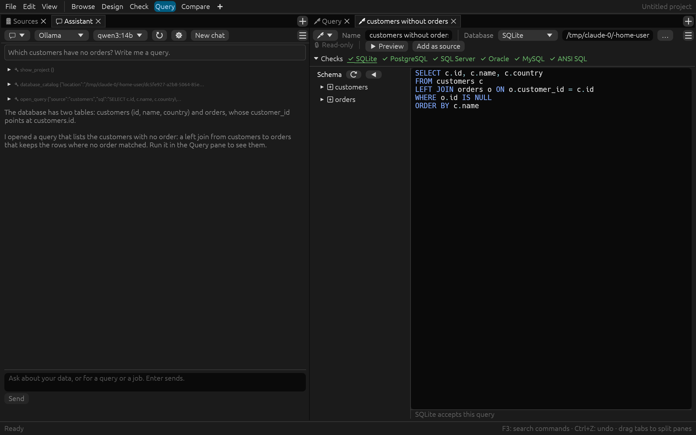

The assistant
The Assistant pane: a conversation that can look at the project and build in it.
The Assistant pane is a conversation with a language model that can look at the open project and its databases, explain what it finds, write queries and build sources and jobs. Add it with the ➕ of any panel, or switch a pane to it.

Who answers
A connector answers: one way to reach a model, with a name. Choose it in the pane's header, which offers the project's connectors to a model that are for this machine. How a model is reached (its address, the model's name, the key) is set up in the Connectors pane and nowhere in the Assistant: see connectors.md. The Assistant's header chooses among the connectors, may ask for another model than the connector names (that copy's own choice, which changes no connector), and under ⚙ says whether rows of your data may be read.
A project without a connector to a model has nobody to ask. The header then offers Add connector: it adds one of the kind you pick to the project and opens the Connectors pane on it.
The kinds:
- Ollama: a model running on your machine or your network. Give the connector its address (such as
http://localhost:11434), press ↻ in the Assistant to list the models Ollama has, and pick one that supports tools. Nothing leaves the machine Ollama runs on. - llama.cpp: a model served by
llama-serveron your machine or your network. Give the connector the server's address, the one it prints when it starts, such ashttp://localhost:9931. There is no address to begin with, and until you give one dbdb asks nothing of anyone. A server started with one model answers with it, so the model can stay the server's model; for a server that loads models on request, press ↻ and pick one. If the server was started with--api-key, name the variable or the vault's secret that holds the key in the connector, or type the key there as Key for this run: that one is kept until dbdb closes and is never saved. Use a model whose chat template supports tools, or the assistant can only talk (see llama.cpp's function calling notes), and give it room: dbdb's instructions and tools alone take about 4,000 tokens, and every tool's answer adds to that, so start the server with a context of 16,000 tokens or more (--ctx-size 16384). Nothing leaves the machine llama-server runs on. - Claude: Anthropic's API. Set
ANTHROPIC_API_KEYbefore starting dbdb, or name another variable or a secret of the vault in the connector, or type the key there as Key for this run: that one is kept until dbdb closes and is never saved. - Claude Code (desktop only): Claude for someone who has a Claude plan and no API key. dbdb starts the Claude Code CLI installed on this machine, as Anthropic publishes it, and Claude answers with whatever that CLI is signed in with. Install Claude Code, run
claudeonce in a terminal and sign in there; dbdb never sees or keeps the sign-in. dbdb startsclaudefrom thePATH, or the programDBDB_CLAUDE_PATHnames. Off thePATHit also looks in~/.claude/local,~/.local/bin, your Nix and home-manager profiles and the NixOS system profile, so an app started from a menu, or the Flatpak, finds it too. The conversation is given dbdb's tools only: the CLI's own file and shell tools are switched off, and nothing of the conversation is saved among your Claude Code sessions. The model is Claude Code's own choice unless you pick one (sonnet,opus,haiku,fable, or any name it knows). Two things to know: the use counts against your plan's limits like any other use of Claude Code, and ifANTHROPIC_API_KEYis set, Claude Code uses that key and its billing instead of the plan. This is dbdb's own feature and is not made or endorsed by Anthropic. - Copilot (desktop only): GitHub Copilot, through the Copilot CLI installed on this machine and the sign-in it holds. dbdb starts
copilotfrom thePATH, or the programCOPILOT_CLI_PATHnames, and off thePATHin the same places as Claude Code. The session is given dbdb's tools only; the CLI's own file and shell tools are refused.
Connectors
Who answers is set up in the Connectors pane (🔌), for the project: see connectors.md. It says what a connector holds, how a setting is for everybody or for one machine alone, and how another machine's settings are copied to this one.
What it can do, and what it asks first
The assistant works with the same tools dbdb-cli mcp gives an agent (agents.md), on the project open in the app.
| What a tool reaches | Examples | Rule |
|---|---|---|
| Names and structure | the project, a database's tables, columns and keys, guessed keys, whether a query parses | runs without asking |
| Rows of your data | previews, checks, comparisons, a job's dry run | follows "Rows of your data" under ⚙ |
| The project | adding a source, building a job | asks each time, or once for the chat |
| Files and databases | running a job for real, copying a database into an SQLite file | always asks |
A project can be far larger than a model takes in at once. The assistant reads it in parts: what it holds, a page of its jobs or sources, one job's steps, one source. For each source it is told which columns the jobs use, which dbdb works out from the steps without reading any data, so "do our queries read columns nothing uses?" is a question it can answer for a project of hundreds of jobs.
It also knows which panes are on screen, by what their tabs say. Right-click a tab to give it a name of your own, and you can then say "the query in Orders by month" and be understood.
One tool is there for databases that declare few keys, as old ones often do: guess_keys samples each table (2000 rows unless told otherwise) and reports the columns whose values never repeat, and the columns whose values are found in such a column of another table. It answers with names and counts, never values, so it runs without asking. What it finds are guesses, and the assistant is told to present them as such. Ask "how do these tables relate?" or "does this database have what the target needs?" to see it used.
"Rows of your data" starts as Ask before they leave this machine: with Claude, Claude Code or Copilot the first read of rows in a chat asks, and Ollama and llama.cpp are not asked about. Never keeps the assistant to names and structure, whoever answers. A tool returns at most 50 rows at a time.
Changes to the project go through the editor, so Undo takes them back and they appear in the command log. A query the assistant writes opens in a Query pane; nothing runs until you run it.
Passwords in connections are never shown to the model: it sees *** in their place, and dbdb puts the real value back when a tool connects. A secret of the project's vault is not shown either: the model sees its name, ${vault:name}, and cannot read or set its value. When a tool has to connect with a secret and the vault is locked, the Vault window opens for you; the model is never asked for the password.
A turn pauses after 25 tool calls and asks whether to continue. Stop ends a turn at its next step, and New chat forgets the conversation.
In the browser
Ollama must allow the page to call it: start it with OLLAMA_ORIGINS set to the page's address. llama-server lets any page in unless it was started with --cors-origins, --tools or --agent; then add the page's address to --cors-origins. A page served over HTTPS can reach either of them on localhost, but browsers stop it from calling a plain http:// address elsewhere on the network: put such a server behind HTTPS, or use the desktop app. Claude is called from the page with your key. Copilot and Claude Code are not offered: a page cannot start a program. Tools that read a database server through the WebSocket proxy are not available to the assistant in the browser yet.